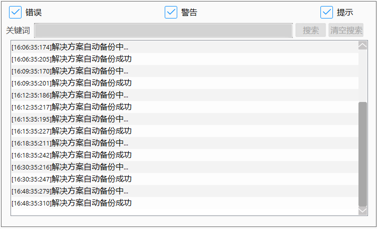

通过点击生产界面，可在生产界面看到日志信息显示窗口，窗口如图所示：
其中，日志显示窗口具体功能如下

错误：指的是日志类型里的错误信息；
警告：指的是日志类型里的警告信息；
提示：指的是日志类型里的提示信息。
以上三种日志类型，都有勾选和不勾选两种状态。勾选时，显示该类型信息；不勾选，不显示该类型信息。
关键词编辑：在编辑框，待输入的用于搜索目标信息的关键词汇。
搜索：利用输入的关键词，搜索定位日志信息
清空搜索：清空关键词编辑，日志信息显示区恢复到日志类型筛选的结果状态。
日志信息显示区：用于显示经过筛选的日志信息，最大显示512条信息；超过512时，仅显示最新的512条。
日志信息选中复制：在日志信息显示区，可通过鼠标单击、鼠标框选（支持ctrl、shift键）实现日志信息多选；通过鼠标右键，进行复制功能。
日志信息另存为：在日志信息显示区，通过鼠标右键，选择另存为，可对当前日志信息保存。保存格式为txt文件。
【备注】